int main () {}
Los número en las computadoras suelen representarse como tiras de ceros y unos. Si nuestra intención es representar únicamente números enteros, entonces podemos elegir cuáles números enteros vamos a representar, y asignar a cada combinación de ceros y unos uno de ellos.
Desde luego, las tiras de ceros y unos que usan tienen la misma cantidad de lugares (de bits). Así, según sea su tamaño, será la cantidad de números que tendrán representación en nuestra máquina. Obviamente, es razonable también ejegir números que sean consutivos en un rango. Por ejemplo, podemos representar los números entre -128 y 127 si contamos con 8 bits. Pero también podemos usar esos 8 bits para representar los enteros entre 0 y 255. Más en general, bits alcanzan para representar números. Como
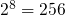
, entonces 8 bits permiten representar 256 números. Pero ¿por qué es esto así?Bueno, claramente un bit permite representar 2 números y
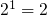
. Por otra parte, supongamos que con bits representamos números y agregamos un bit más. De esta forma podemos representar, por cada estado de este nuevo bit, números, es decir, en total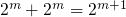
y entonces con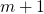
bits representamos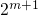
números.Pero muchas veces necesitamos representar número reales, no sólo enteros. Es decir, si tenemos por ejemplo una lista y queremos saber cuantos elementos contiene, o si queremos ver el tercero o el cuarto, o cualquier posición en particular, entonces podemos usar números naturales (incluyendo el cero) o, como se suele decir, enteros sin signo. Sin embargo, existen aplicaciones en las cuales necesitamos números reales.
Esto no significa que si el resultado de una cuenta no es entero tengamos que usar necesariamente una representación diferente. Por ejemplo, si un grupo de amigos tiene que dividir los gastos de una comida y entonces alguien con una calculadora divide el total por la cantidad que sean, si bien muy probablemente el resultado no sea entero, probablemente tampoco sea nececesaria esa precisión en este caso. Por otro parte, incluso si fuera necesario conocer con la mayor exactitud posible, no hay monedas para cantidades inferiores a un centavo. Entonces, expresando las cantidades en centavos el resultado obtendrá suficiente precisión.
Es más, cuando necesitamos hacer cuentas con números reales, los resultados en general son aproximaciones, no exactos, si bien la aproximación puede ser suficientemente cercana para que no resulte un problema, como en el ejemplo mencionado.
Pero para los números reales se usa la representación de punto flotante. Esta representación es igual a la notación científica. Veamos algunos ejemplos decimales.
Supongamos que, de modo análogo a como ocurre con las computadoras, tenemos un cantidad fija de 5 dígitos paa representar un número, y queremos representar el número correspondiente a la población mundial que en 2017 según wikipedia es de 7.350 millones, o sea 7.350.000.000. Claramente, con 5 dígitos no nos alcanza. ¿Qué podemos hacer? Bueno, algo que podemos hacer es decir que vamos a expresar en millones que fue lo que hicimos en un principio. Esto no es otra cosa que decir que la población mundial es de
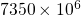
. Tenemos entonces el número descompuesto en dos partes. Por otra parte, probablemente este número sea una aproximación y no el número exacto, pero también probablemente las primeras cifras si se correspondan con el valor exacto. Ahora bien, si fueramos a usar esta representación en la computadora, con el exponente fijo, podríamos usarla para estas magnitudes, pero no nos serviría para muchas otras, como el ejemplo anterior.Por ese motivo, es necesario poder decir que el número está expresado en millones, o en decenas, o en unidades de mil, etc. De este modo, el número se representa de la siguiente manera:
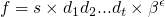
donde es el signo (1 o -1), los
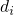
(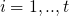
) son dígitos enteros que componen la mantisa y cumplen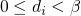
. es la base (10 en los ejemplos de arriba, en la computadora suele ser 2). es el exponente (al que se eleva la base). es la cantidad de digitos presentes en la mantisa y se llama precisión.Tomemos el número 8000 como ejemplo. y necesitamos 13 bits para representarlo. Como la representación es binaria, el número que multiplica la mantisa no es una potebncia de 10 sino de 2. Por ejemplo
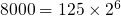
ya que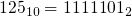
. Como siempre, podemos representar el mismo nùmero con distantas opciones de exponente y mantisa. Por ese motivo, conviene adoptar la convención siguiente. Dado que el número esta representado con digitos biarios (cero o uno), entonces con la única excepción del cero, todo número tendrá algún uno en su representación. De este modo, podemos asumir que, cuando no se trata del cero, hay un uno (implícito) que no hace falta guardar en nuestra tira de bits. Así por ejemplo, el número 3 podría representarse con una mantisa con un solo uno y un exponente también de uno, representando así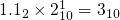
. Esto permite además agregar un bit más, que está implícito siempre.